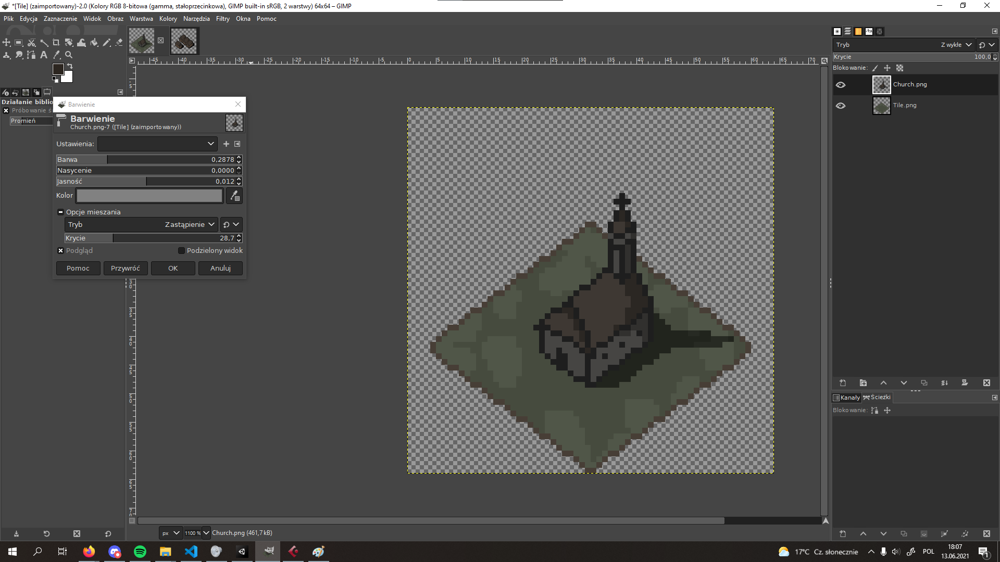

Mountain Cat's Games
Small games made with great passion
Not all games are made by great, longstanding game design studios like CD Project or Bethesda. We all remember the success of games like Minecraft or Undertale. So here am I, one-man team trying my best to create something you all will enjoy. Small games are not always worse, but for sure they are diffrent, and that makes them often even more interesting than high budget productions.Year of self training
I has been more than a year ago when I first thought of making my own games. I still remember a game-like console application that I made that did not have anything except text and audio like soundtrack and sound effects. Just few months later I started working on one of the most popular game engines - Unity. From then I started my journey of making games as a solo game developer.Orginal music
For my games I often try to add my own original music. You can expect that every one of them will have unique soundtrack that match a theme of the production. You will also be able to use them for free in your own projects! All mp3 files will be attached to the games, without any encrypting.Art for my games
As was stated before, I am one man team. All the are for my games is made by me. Most usually it is a pixel art, easy and fast so I can more focus on gameplay, and adding more features. It is also really pleasing to eye, and leaves a lot to an imagination of every individual player.
